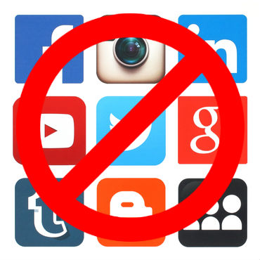

Becoming Anonymous
Going Incognito
One of the most basic privacy options that just about anyone can take advantage of. The top four most popular browsers - Google Chrome, Internet Explorer, Mozilla Firefox, and Safari - provide a private browsing mode. With this setting activated, your browser will not store cookies or internet history on your computer. However, this method is ineffective in hiding your identity or browsing activities beyond your local machine as your IP address can still be tracked.

Don't Use Social Media
Social networking sites harvest personal data from every user. Either you stay careful with what you share or just don't use social media at all. It's also important to note, "Deactivating" an account does not delete the account but rather puts your account into hibernation mode. You must "Delete" your account to completely wipe all the information.

VPN
Virtual Private Networks are one of the most effective ways to protect your privacy online. It essentially hides your IP address - your unique online identifier - and runs all your online data via a secure and encrypted virtual tunnel, which can keep websites from tracking your online activity or even knowing which country you're browsing from.

Use Extensions
There are ways to block and manage trackers, secure emails, and deny spam messages all with the use of extensions. For example: Mailvelope and SecureGmail are browser extensions that bring OpenPGP encryption to your email service and ecrypts and decrypts you send through Gmail. There's other fantastic browser extensions like Ghostery that will reveal website trackers or bugs.
The Ultimate Solution
Just go straight caveman mode and abandon the internet completely. Live a hunter-gatherer lifestyle in a state or national park (maybe bring a friend along), and hopefully you won't get caught by park rangers. This will allow you to disconnect from the online world, ultimately protecting your privacy.